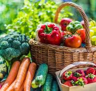
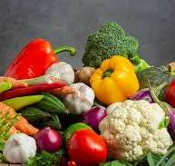
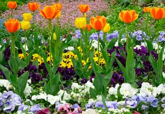
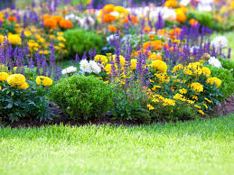
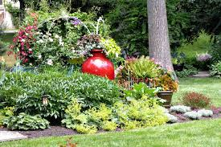

Urban Farming Course: Grow Your Future in the City 🌱
Discover the transformative world of urban farming with our comprehensive course! Whether you’re a city dweller
dreaming of fresh produce, an eco-enthusiast aiming to reduce your carbon footprint, or an aspiring entrepreneur
looking to start a sustainable venture, this course is designed for you.
What You'll Learn:


Growing Techniques: Master soil-based and hydroponic farming tailored for urban spaces.
Space Optimization: Turn balconies, rooftops, and small yards into lush, productive gardens.
Sustainability Practices: Learn eco-friendly methods that conserve resources and promote biodiversity.
Business Basics: Explore opportunities to monetize your harvest through local markets and farm-to-tableventures.
Benefits of Urban Farming
Healthier Lifestyle: Enjoy fresh, organic produce right at your fingertips.
Environmental Impact: Reduce food miles and contribute to a greener city.
Community Building: Foster connections by sharing your harvest and knowledge with neighbors.
Skill Development: Gain hands-on experience in farming, problem-solving, and sustainability.
Join us in revolutionizing how we grow and consume food in urban spaces. Take the first step toward a greener future
today!🌍
Ready to dig in?
Enroll now and start cultivating your urban oasis.
Urban Flower Farming: Bloom Where You’re Planted 🌸
Turn your passion for flowers into a thriving venture with our Urban Flower Farming course!
Whether you want to create a stunning personal garden, beautify your community, or start a profitable floral business,
this course equips you with the skills and knowledge to cultivate vibrant blooms in even the smallest urban spaces.
What You'll Learn:


Flower Selection: Discover the best flowers for urban environments, from perennials to seasonal blooms.
Space-Savvy Growing: Learn how to maximize small spaces like rooftops, balconies, and courtyards for flower farming.
Sustainable Practices: Embrace eco-friendly methods to grow stunning flowers without harming the environment.
Floral Business Tips Explore creative ways to sell your blooms, from farmer’s markets to floral designbusinesses.
Benefits of Urban Flower Farming
Beautify Your Space: Transform your urban environment into a colorful sanctuary.
Stress Relief: Experience the therapeutic benefits of tending to flowers and connecting with nature.
Income Opportunities: Generate additional income through flower sales, subscriptions, or workshops.
Environmental Positivity: Support pollinators like bees and butterflies while greening your city.
Community Engagement: Share beauty and joy by brightening public spaces and gifting blooms.
Create a world of color and connection, starting right in your city. Let your journey in urban flower farming flourish today! 🌷
Enroll now and grow your passion for flowers into something extraordinary.
Backyard Urban Gardening: Transform Your Space, Transform Your Life 🌿
Unlock the potential of your backyard with our Backyard Urban Gardening course! Whether you have a small yard, a patio, or
even just a corner of green space, this course will guide you in creating a thriving garden that provides fresh produce,
vibrant flowers, and a peaceful retreat—all while contributing to a sustainable lifestyle.
What You'll Learn :


Garden Planning: Design a backyard layout that maximizes space and sunlight.
Crop Selection: Discover which vegetables, herbs, and fruits thrive in urban backyards.
Eco-Friendly Gardening: Learn sustainable practices like composting, rainwater harvesting, and organic pest control.
Seasonal Growing: Master the art of year-round gardening by rotating crops and preparing for changing seasons.
Benefits of Backyard Urban Gardening
Fresh and Healthy Food: Grow your own organic produce for a healthier lifestyle.
Cost Savings: Reduce grocery bills by cultivating a self-sustaining food source.
Stress Reduction: Reconnect with nature and find peace through hands-on gardening activities.
Environmental Impact: Help reduce food miles, improve air quality, and create a greener community.
Family and Community Bonding: Share the joys of gardening with loved ones and neighbors while
fostering a sense of connection.
Reimagine your backyard as a hub of beauty, productivity, and sustainability. Start your journey to backyard urban gardening today
and cultivate more than just plants—cultivate a better way of life. 🌱
Enroll now and watch your backyard grow into something extraordinary!